Тема лабораторной работы: «Кодирование аудио- и видеоинформации, их обработка».
Цель: обучение способам кодирования аудио- и видеоинформации и их обработке.
Оборудование: интерактивная доска для демонстрации компьютера учителя, сервисы Veed . io и Clideo . com .
Ход занятия:
Актуализация знаний
Изложение нового материала
Сегодня на занятии научимся кодировать аудио- и видеоинформацию, а также рассмотрим способы их обработки.
Кодирование звуковой информации – это процесс преобразования звука, при котором его можно будет хранить и передавать в цифровой форме.
Существуют два основных метода кодирования: FM и Wave - Table .
Метод FM происходит от Freguency Modulation и основан на том, что любой звук можно разложить на элементарные последовательности сигналов. Процесс такого преобразования можно назвать аналогово-цифровым преобразованием.
Рассмотрим подробнее, как это происходит.
Существует некоторый звук в реальном мире, например, говорит человек или поет птица. Такой звук можно изобразить следующим образом:
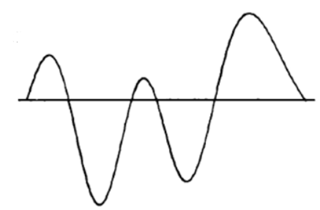
Этот звук нужно сохранить в электронном виде, поэтому ему требуется цифровое преобразование. Для этого он подвергается дискретизации, т.е. разбиению на отдельные части. Чем чаще звук разбивается (частота дискретизации) на отдельные части, тем точнее он будет переведен в цифровой код. Условно данный процесс можно изобразить следующим образом:
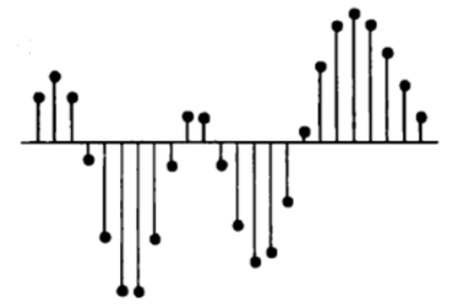
Во время преобразования в числовой код процесс будет преобразован к следующему виду:
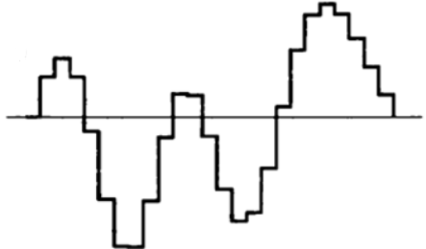
Теперь, чтобы снова получить аналоговый звук, необходимо сгладить образовавшиеся ступени. Это можно изобразить следующим образом:
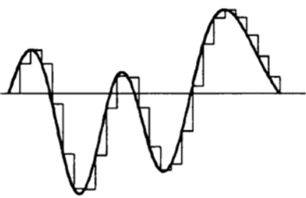
Что касается самого отображения звукового сигнала в коде, то его можно представить с помощью нулей и единиц, как и для графической информации.
Задание. Закодируйте с помощью нулей и единиц зависимость громкости звука от времени.
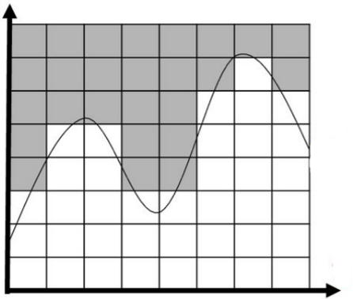
Решение
Все, что выделено серым цветом укажем как 0, а белым – 1.
В результате получим следующее полотно из чисел:
00000000
00000010
00000111
01100111
01100111
11111111
11111111
11111111
Wave - Table представляет собой таблично-волновой метод, особенностью которого является наличие специальных таблиц, в которых хранятся образцы различных звуков реального мира, которые используются для сравнения в процессе преобразования из цифровой формы в аналоговую, чтобы минимизировать потери качества звучания. В процессе обработки звука учитываются такие показатели как: продолжительность, тональность, интенсивность звука и др.
К форматам звуковых файлов можно отнести: MIDI , WAV , MP 3 и др.
К обработке звука можно также отнести различные изменения характеристик звучания. Например, устранение шумов, добавление спецэффектов и т.д.
Есть специализированные программы, которыми пользуются различные специалисты, занимающиеся обработкой звука, но для знакомства с обработкой звука воспользуемся простым аудиоредактором на сайте Veed . io .
Обработать звук с использованием данного сервиса очень просто. Достаточно следовать следующей инструкции:
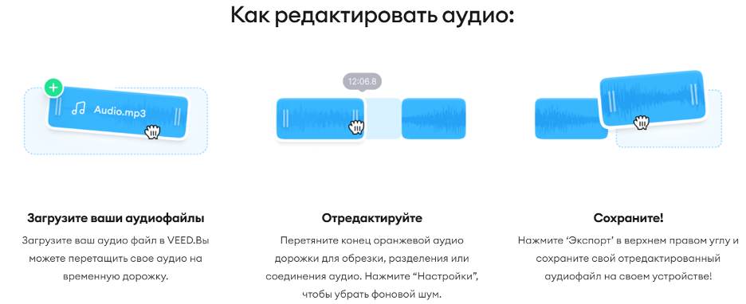
После загрузки аудиофайла мы попадаем в среду:
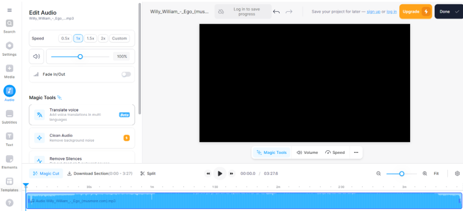
В разделе Audio можно менять скорость воспроизведения и громкость звука:
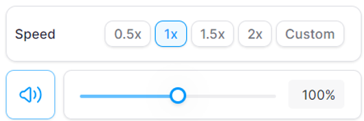
Чтобы обрезать нужную часть нужно передвинуть ползунок на необходимую минуту и нажать на Split :
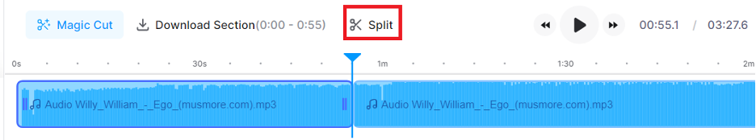
Если нужно поставить фон на музыкальный файл, то необходимо перейти в раздел Setting и выбрать фон, например:
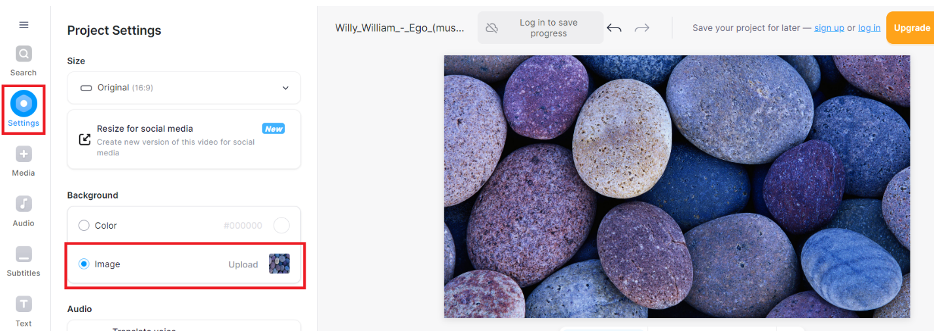
Если нужно разместить текст, то можно перейти в раздел Text , выбрать вид текста и написать необходимую информацию:
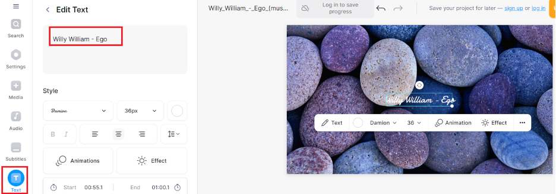
Остальные возможности изучите самостоятельно.
По сути видео – это изображение + звук. Видеоинформация кодируется также как и кодирование звуковой информации. Дело в том, что изображение в видео состоит из кадров, которые меняются с определенной частотой. Причем кадр кодируется как обычное растровое изображение. Если закодировать все кадры видео, то таким образом можно закодировать все видео.
Т.к. изображения для видео используются для цветовоспроизведения на различных электронных устройствах, то в них главным образом реализуется цветовая модель RGB .
RGB – это цветовая модель, которая используется для цветовоспроизведения изображений на устройствах. Причем RGB – это аббревиатура, в которую входят первые буквы трех цветов: красный, зеленый и синий.
Рассмотрим задачу, отражающую цветовую модель RGB .
Задача. Чтобы прописать цвет фона веб-страницы применяется атрибут bgcolor = “# XXXXXX ”. В кавычках задаются 16-теричные значения цветов в 24-битной модели RGB . Определите цвет фона веб-страницы, если <**** bgcolor="#FF00FF>. В ответ напишите один из цветов, который будет больше соответствовать представленному фону. Можно выбрать один из следующих цветов: серый, розовый, красный, зеленый.
Решение
****** означает, что на красный цвет выделены первые FF, на зеленый – 00, а на синий – последние FF . Если стоит 00, то это означает, что данного цвета нет, а FF – показывает максимальную насыщенность. В нашем случае получается, что смешиваются красный с синим. При соединении двух
Наиболее популярными видеоформатами являются: ASF, FLV, MKV, MP4 и т.д.
Существует множество видеоредакторов. Например, Clideo . com .
Зайдем в Видеоредактор:
Нажмем загрузить и загрузим любое видео. Например, видео про Лунтика:
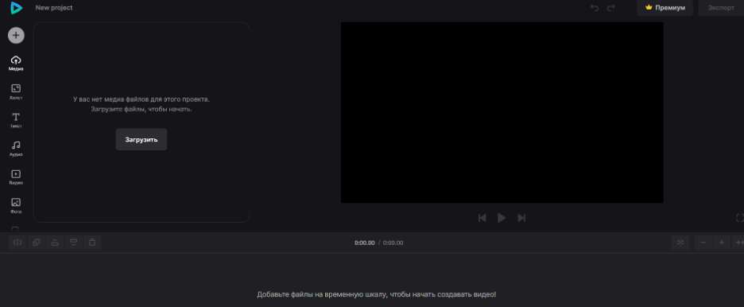
Используя ползунок можно просматривать кадры:
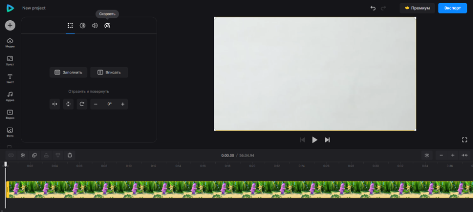
В разделе Холст можно устанавливать размер холста:
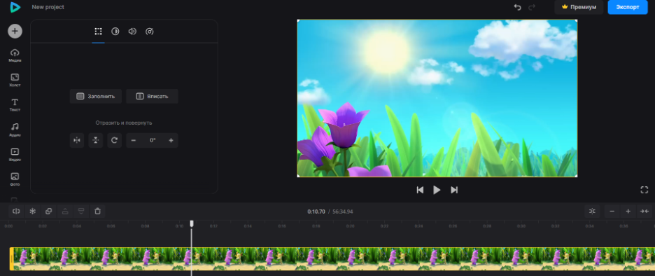
В разделе Текст можно добавить текст:
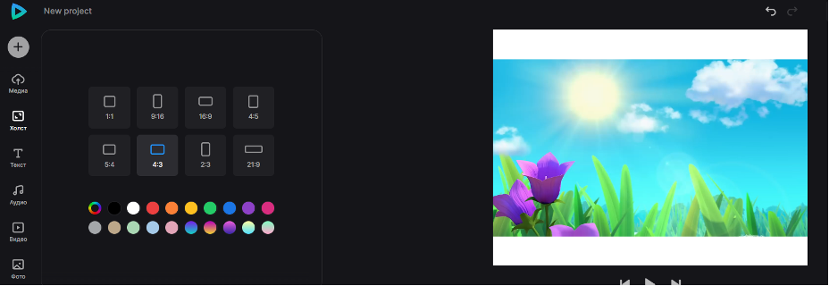
В разделе Аудио можно добавить звук:
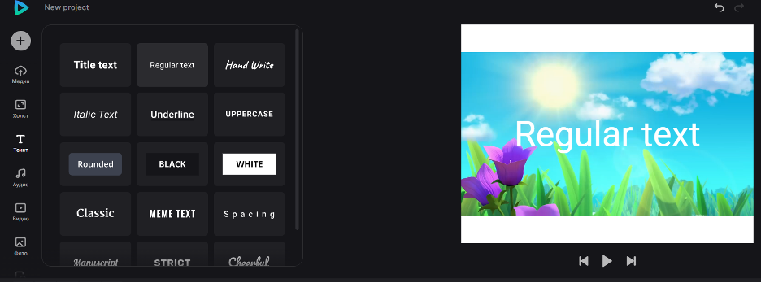
В разделе Видео можно добавить видеокадры:
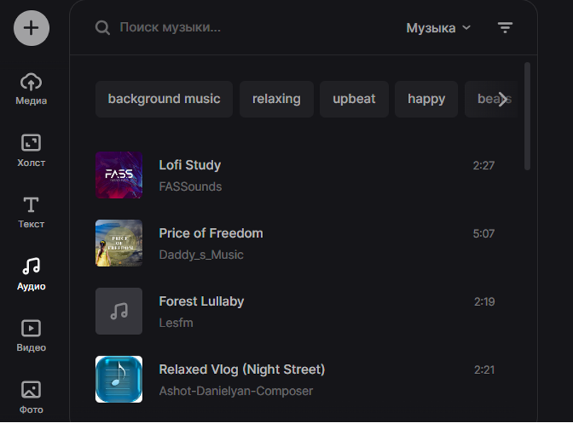
В разделе Фото можно добавить фотографии:
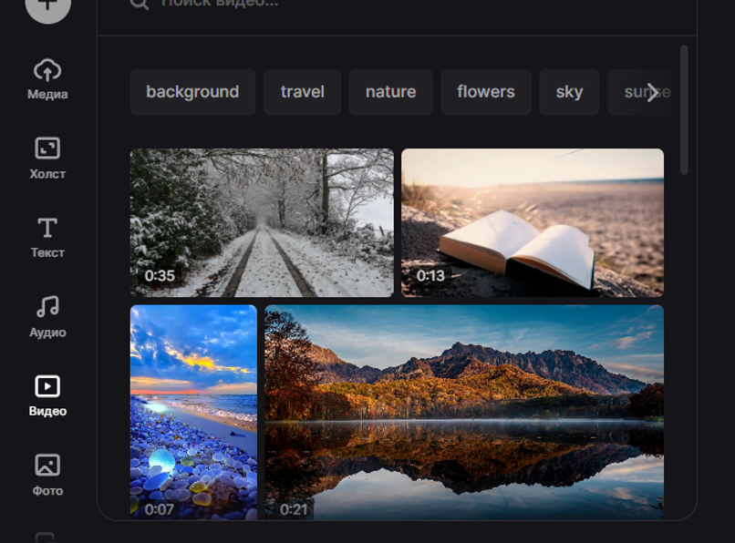
Протестируйте максимальное количество возможностей данного сервиса, выполняя задание 5, находящегося в разделе Вопросы и задания для самоконтроля.
Вопросы и задания для самоконтроля